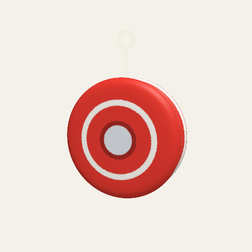
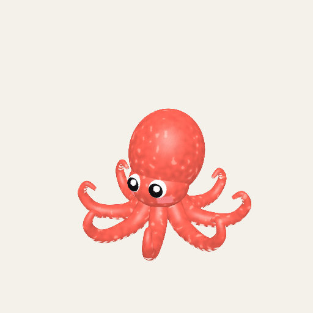
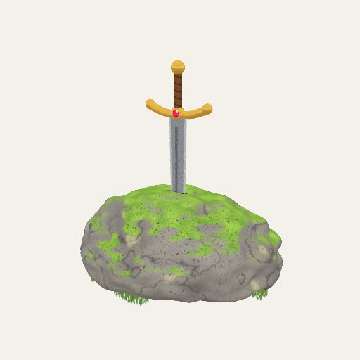
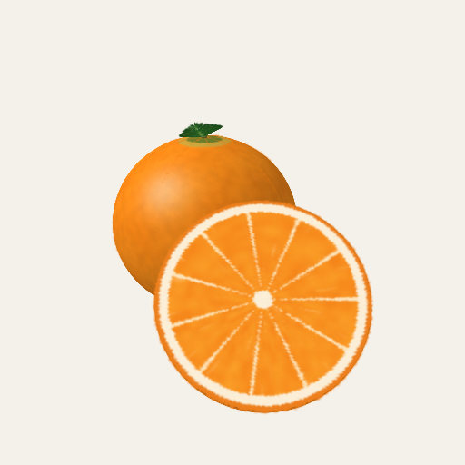
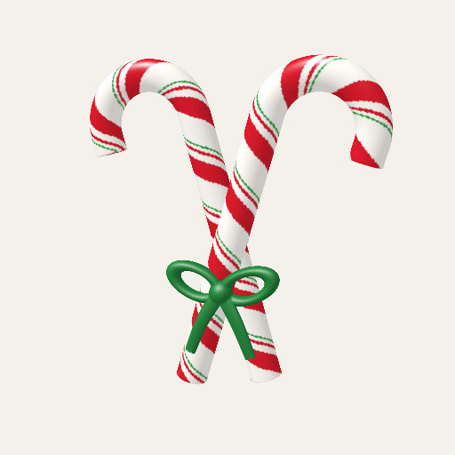

Definitions, derivations, notes, and long tables start folded.
Chapter 6Moving things
Chapters 1 to 5 moved splats with programs: a recipe's drive sets a part's
angle every frame, and the toy plays out. This chapter is about motion that comes from your
finger and from physics: pick a toy up, throw it, let it land and settle, open its lid, pull
a sword out of a stone. The same rule from the effect-quality notes holds throughout:
parts move as solid pieces. Nothing is bent. A lid swings on a hinge, a wedge slides
out of its orange, and the splats that belong to a part travel with it. This is not behind
the labs switch: the ✋ switch is in the Playground for everyone.
Hands-on play: pick up, toss, settle
What it is. With the ✋ switch on, a drag picks up whatever is under your finger. A quick let-go tosses it; it falls, bounces, and comes to rest on the floor under the toy, inside an invisible play area. The ↺ button sends everything home. A press has to move 7 screen pixels before it counts as a pick-up, and a drag shorter than 24 pixels only nudges the toy, so a tap or a light touch never throws anything.
How Splashery does it. Splashery has a small physics engine of its own, with no
library (src/physics/world.js). It is
extended position-based dynamics [11,
12]: instead of computing forces and integrating them,
each step moves the bodies to where they would be if nothing overlapped and every joint
held, then works out velocities from how far they moved. The world is built on the first
pick-up, so opening a toy costs nothing. It steps 1/60 of a second at a time whatever the
frame rate, in 8 smaller substeps for a whole toy and 10 for a toy with pieces, and it falls
asleep once everything has been slower than a small speed for half a second.
Most toys play as one rigid body: their pose moves the toy's whole entity, so the splats are sorted and taps land where the toy lies now. A rigid body needs a shape to collide with, and a toy has only splats, so Splashery finds the outside from them. It samples up to 6,000 of the toy's splat centers and, in each of 64 directions, keeps the splat that lies furthest out (ignoring the outermost half of a percent, which are usually stray specks). Those 64 points are the body's collision points. A ball gets a sphere instead, so it rolls. The floor is under the toy; four invisible walls sit just past its widest reach; a ceiling sits above the highest point. Gravity is 26 toy radii per second squared, so a toy falls the same way whatever its size on screen. A throw takes its speed from the last tenth of a second of finger motion, and is capped at 4 toy radii per second.
Soft toys squish when they land. How much is a number per toy (61 toys have one, such as the jelly at 1, a bouncy ball at 0.55, a strawberry at 0.15), and it reaches the screen as two uniform values that squash and bulge the toy as a whole. This is a squash of the pose, not a bend of the scan: the splats stay where they are inside the toy's own frame.

A rigid body: the yo-yo

Arms that ride the body: the octopus
Show the table: the numbers of hands-on play
| Number | Where | What it does |
|---|---|---|
| 7 px | PRESS_MOVE |
How far a press moves before it is a pick-up. |
| 24 px | NUDGE |
A drag shorter than this pushes the toy and never picks it up. |
| 26 radii/s² | GRAVITY |
Gravity, in toy radii, so every toy falls alike. |
| 0.1 s | THROW_WINDOW |
The span of finger motion a let-go takes its speed from. |
| 4 radii/s | THROW_MAX |
The fastest throw. Slower than 0.4 (THROW_MIN) is a still hold.
|
| 0.6 per s | AIR_DRAG |
Air drag on a thrown toy that has no material of its own. |
| 1/60 s | STEP |
The world's step, whatever the frame rate. |
| 0.45 s | HOME_SECS |
How long ↺ takes to glide everything home. |
| 64 directions | hull() |
A toy's collision points: the farthest of up to 6,000 sampled splats per direction. |
Why toy radii, and why a speed limit?
Our choice Nothing in the format forces these.
Splashery's toys are an inch tall or a planet wide, and the page has no real size. So the world measures everything in the toy's own radius: gravity, the throw's speed, the play area. A matchbox and a mountain then fall and land the same way, and a throw cannot send a toy off the screen. The cost is that the motion is not physically scaled: a real baseball is thrown a hundred times faster than 4 of its radii a second. Where that matters (the curve of a spin, the glide of a disc), the numbers are set to show the real effect in the real order, as the section on materials below says.
Where it lives: the constants at the top of src/physics/hands-on.js.
Pieces and joints: parts that move the way the real thing's do
What it is. A rigid body is one lump. A treasure chest has a lid, and a lid is not a
lump: it swings on its hinge and stops when it is open. A recipe's hands block
lets a toy say that. hands.pieces names pieces of the toy that are bodies of
their own, which stay put until you pick one up or knock it. hands.joints says
how a part may move.
How Splashery does it. There are five kinds of joint and one more setting
(src/physics/joints.js). Hinges, sliders, and dials are driven parts:
one number describes each, an angle or a distance. The finger, gravity, a spring, and the
stops move that number, and the part is then posed exactly from it, so a part never wobbles
off its axis or jitters. Sockets and broken-off pieces are ordinary bodies of the physics
world, solid like the rest.
- Hinge: a part swings about an axis between two angles, with an optional spring toward a rest angle, and falls by its own weight. It bounces off its stop a little (0.2 of the speed, by default). The treasure chest's lid is one.
- Slider: a part moves along a line between two stops. It can be stuck fast until the finger has pulled a set distance, and then it wiggles loose, as the sword in the stone does.
- Dial: you turn a part about its axis, round and round or between two angles, with optional clicks (detents) and coasting after a flick. A dial can hand each turn to the recipe, which is how the music box's crank plays its notes.
- Socket: a loose piece clicks back into its place when you bring it near (within 0.3 toy radii, by default), gliding the last bit in 0.22 seconds. The wedges of the orange are sockets.
- Break: a piece holds fast until it is pulled hard, then snaps off. ↺ mends it. The candy cane breaks this way.
-
Upright: not a joint but a setting,
hands.upright: a whole toy rights itself after it has been tipped.

A hinge: the chest's lid

A slider: the sword

Sockets: the wedges

A break: the cane's top
Why this way. Splashery's rule for effects is that motion must be real motion and not
a warped picture: if a scan cannot move a part cleanly, the part is cut out with hard edges,
swapped for a kit-built one, or the effect is dropped. A joint that moves one number, and a
part that is moved whole by that number, is exactly that rule in code. The same machinery
serves a scan: a scan's rig (src/rigs.js) names the parts of a captured toy,
and src/physics/joints.js turns them into pieces.
A demo goes here later
A box that lets you grab a hinge, a slider, and a dial on a simple toy, with the one number each of them is moved by shown beside it.
Ropes, cloth, and soft stretch
What it is. Some things bend: a string, an octopus's arms, a hood, a kite's tail. Splashery's rule against bending scans does not forbid them, because these toys are built from kit shapes and their bending is built in.
How Splashery does it. Ropes and cloth are lists of points (nodes) held by
distance links, solved with the same position-based method as the rigid bodies, in a solver
of its own (src/physics/soft.js). A rope can be slack (it folds and never
pushes), has a little stiffness against bending, and can be pinned, can ride a piece (an
octopus's arm rides its body), or can follow a finger. A cloth is a grid of nodes, pinned at
its edge, that hangs, drapes, and flutters in a wind. A link can snap when it is stretched
too far, as a cheese string does. Soft stretch, the third piece, is how the gummy bear's
splats follow your finger and then wobble back.
What moves on screen follows the rule too. A thin, bendy thing (a string, a tentacle) is built from splats that each follow the two nodes they lie between, so a rope bends smoothly and every splat still keeps its shape. A sheet has each splat follow the four corners of its cell. A solid thing on a rope (a bead, a chime, the yo-yo itself) is a rigid piece that rides a node and turns with the link, so it stays solid at every angle.
Try it. Pull the string of the yo-yo and let go, or hold the octopus by one arm.
Materials: a thrown thing moves like the real thing
What it is. A basketball, a hockey puck, a paper plane, and a marble do not move
alike. A recipe's hands.material names a preset or gives its own numbers, so a
thrown toy bounces, rolls, spins, and flies the way its real counterpart does.
How Splashery does it. There are 27 presets (src/physics/materials.js),
from the basketball and the soccer ball to the shuttlecock, the flying disc, and the paper
plane. A preset holds the real regulation size and mass of the sport, the bounce its rule
book asks for (a basketball dropped from 1.8 m should come back to 1.2 to 1.4 m, which is a
bounce of 0.82 to 0.88), and the textbook drag of a sphere (0.47). The drag is the real
thing, expressed without units: how many toy radii a toy falls before it reaches its top
speed, Fr = 2m / (ρ cd π
r3) with air at 1.2 kg per cubic meter. Because that number has no
units, it holds whatever the toy's size on screen. A throw spins the toy by where you held
it (a low grab gives backspin, a side grab sidespin), and the spin curves the flight (the
Magnus effect). Lift, for a disc, a cap, or a paper plane, and the curve of a spin are set
to show in a short flight rather than scaled from real life, in the real direction and the
real order: a disc glides more than a cap, and a baseball curves more than a soccer ball.
Try it. Throw the basketball, the baseball, and the paper plane and watch how each leaves your hand.
Rigid parts and the motion driver
What it is. Everything above, and everything a recipe's drive does, ends
in the same place: a few numbers per part for the graphics chip.
How Splashery does it. The MotionDriver in
src/motion.js runs once per frame, on the CPU. It eases the controls, runs the
toy's own behaviors clock, calls the recipe's drive, and gathers what comes out
into uniforms. For parts, packParts writes three four-number values for each of
up to 16 parts (a rotation, a pivot with a scale, and an offset with a visibility), 48 in
all. Every splat carries the number of its part; the shader looks up the part and moves the
splat: p = pivot + R (p − pivot) × (1 + scale) + offset. This is the
same hinge as Chapter 2's, and a part that a joint moves goes through the very same lines.
Hands-on does not have a second way to move a splat: for a toy with pieces, the poses its
world computes are merged into the recipe's drive.parts, so a piece moved by a
finger and a part turned by a program arrive at the shader identically.
Why this way. The GPU moves every splat, and the CPU only decides a few dozen numbers: a physics world with a few dozen bodies costs almost nothing, and a toy with 100,000 splats moves as cheaply as one with a hundred. It also keeps the splats solid: a part's splats are all turned by the same rotation, so a part cannot bend. The limit is that a splat can belong to only one part, which is why a toy has at most 15 parts beside the body (Chapter 2's fold on the number of parts says why).
Where to try it
- Treasure chest, Sword in the stone, Music box, Orange, and Candy cane: a hinge, a slider, a dial, sockets, and a break. Turn on the ✋ switch first.
- Yo-yo, Octopus, and Gummy bear: ropes, arms that ride a body, and soft stretch.
- Basketball, Baseball, and Paper plane: materials.
None of these is behind the labs switch. Chapter 10 says how a recipe asks for hands-on play.